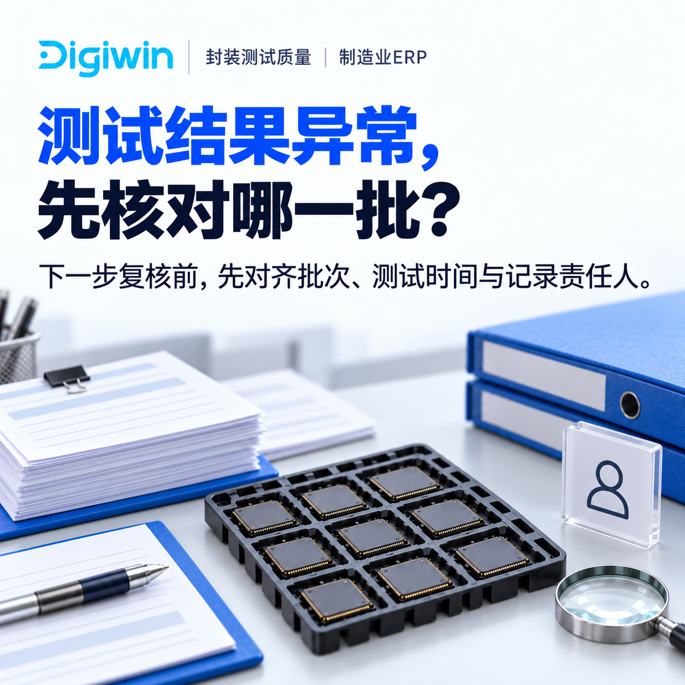
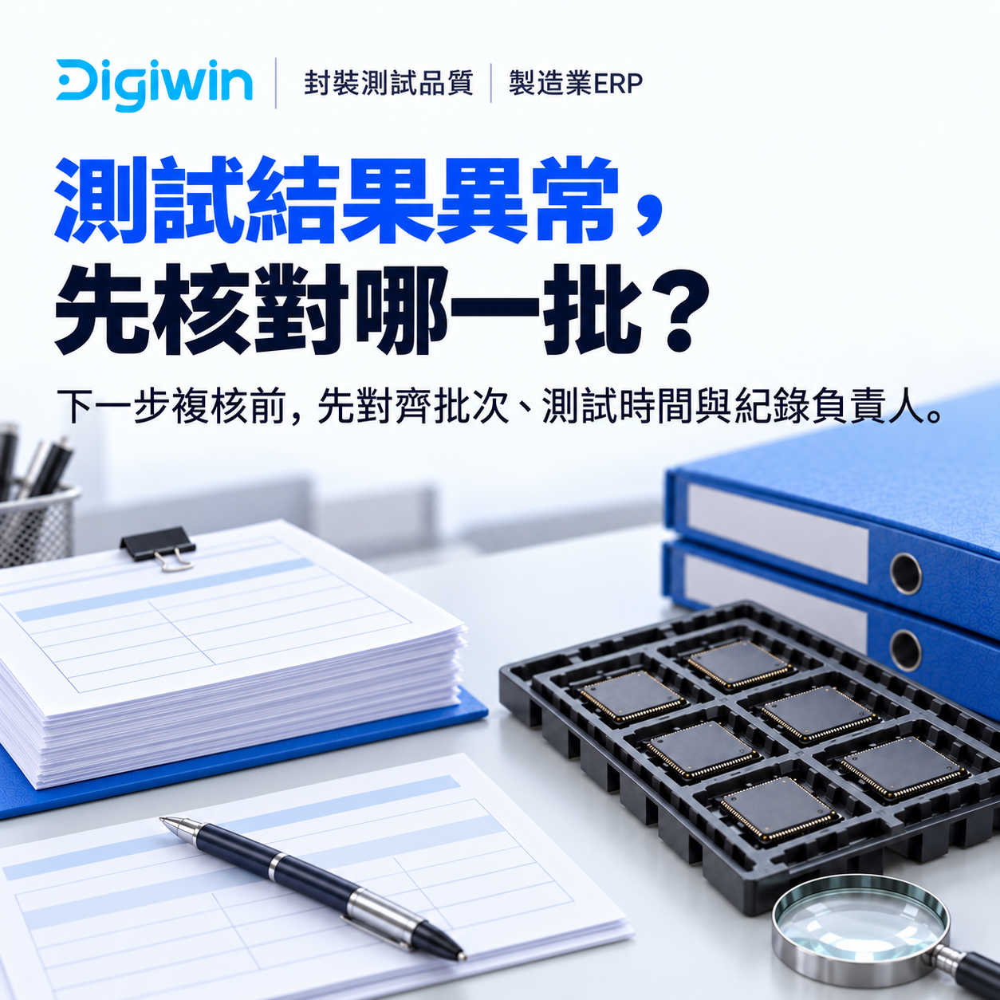
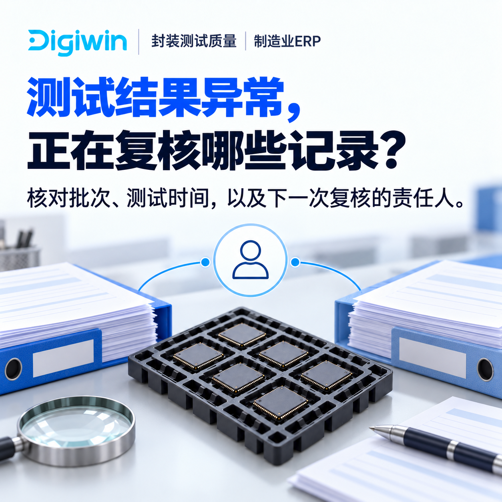
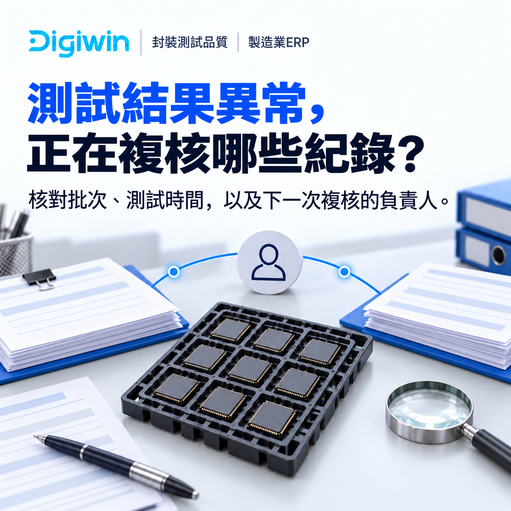
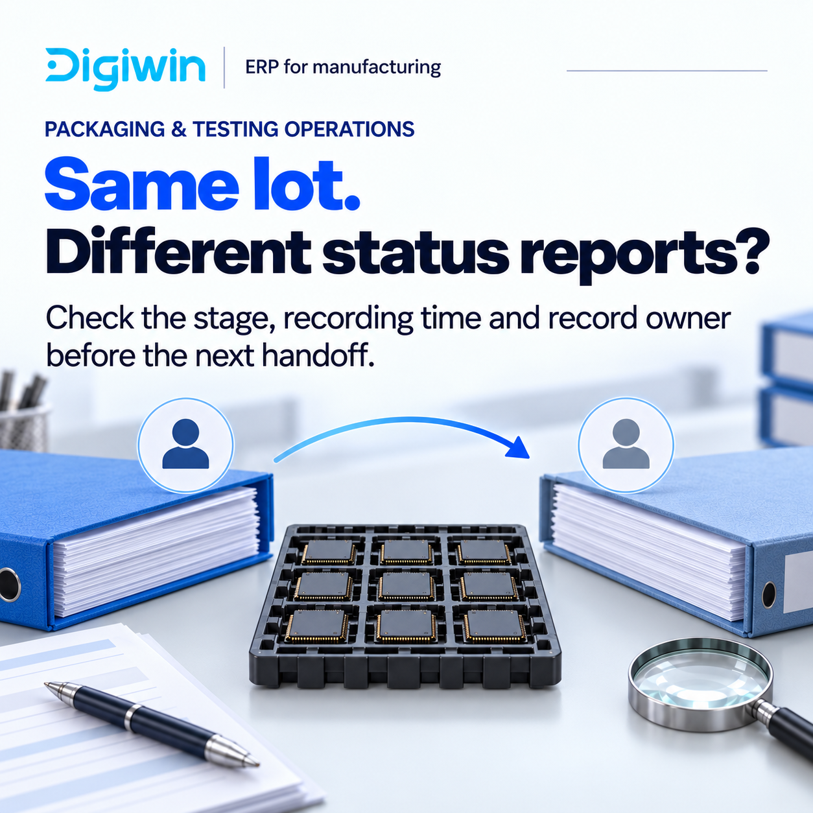
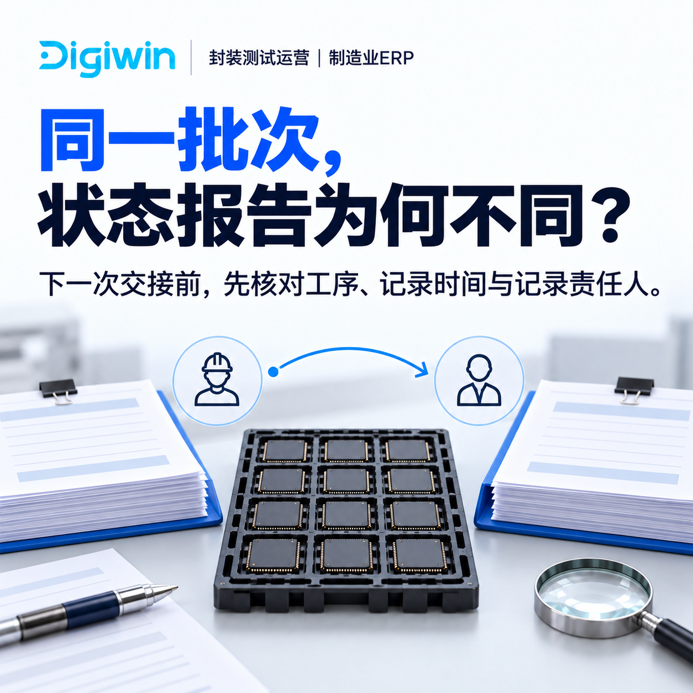
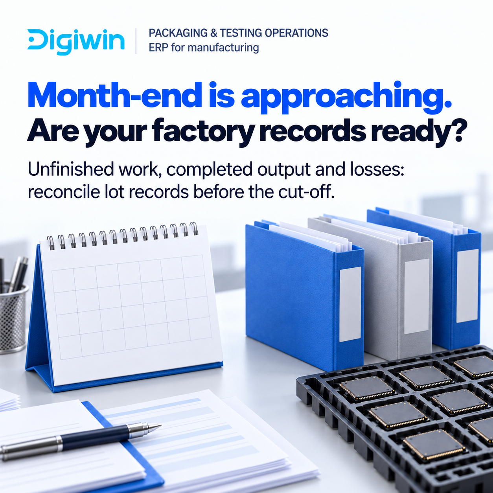
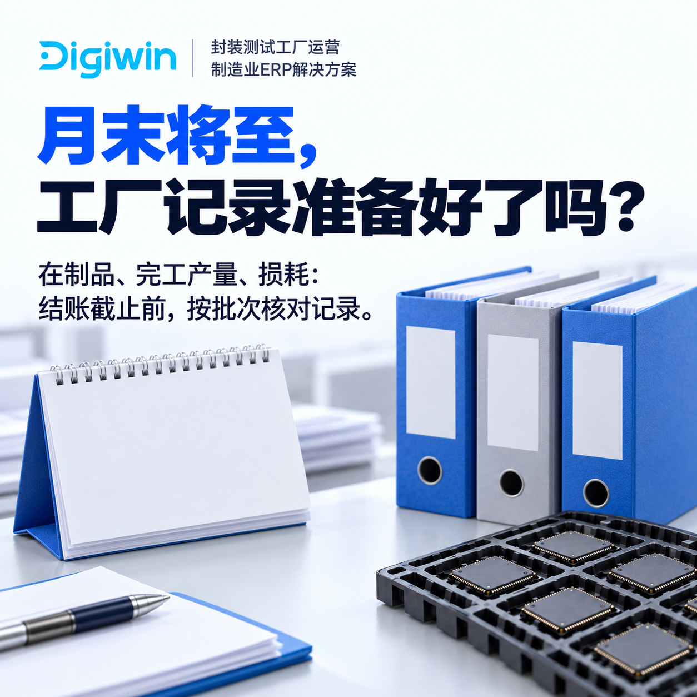
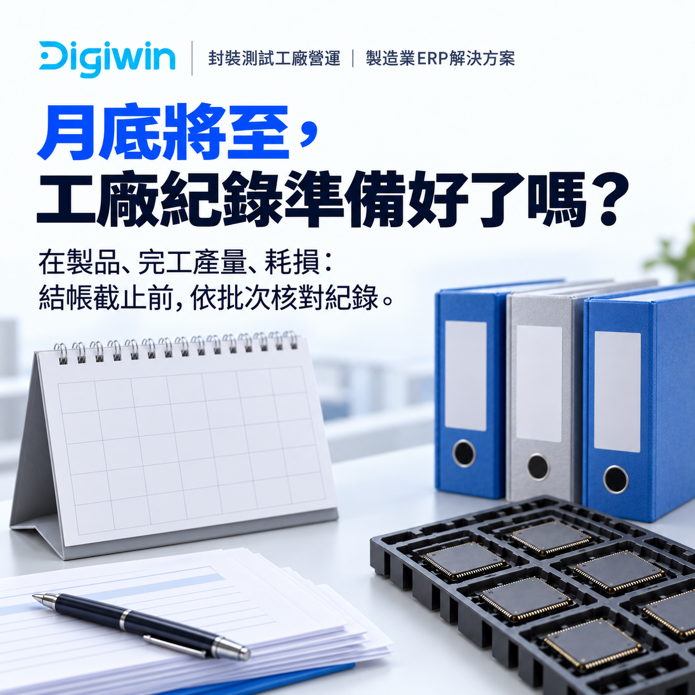

Xem logic quảng cáo để hiểu cách chọn tệp, vai trò từng nội dung và hướng điều chỉnh theo dữ liệu.
Nội dung theo nhóm người đọc
Thư viện để chọn và thay đúng đoạn
Hai luồng VN tuần 1/tuần 2 và các chủ đề OSAT cho FDI. Bảo chọn nội dung theo vấn đề của kỳ review, người phụ trách và ngôn ngữ phù hợp.
 Tiếng Việt · 10 ảnh
Tiếng Việt · 10 ảnhNội địa · Chuẩn bị năng lực quản trị
VN tuần 1
Xem luồng nội dungNội địa · Chuẩn bị hệ thống và tiến độ
VN tuần 2
Xem luồng nội dung English · 10 ảnh
English · 10 ảnhQuality · Đối chiếu kết quả theo lot
FDI · Quality
Xem luồng nội dung
中文 giản thể · 10 ảnhQuality · Đối chiếu kết quả theo lot
FDI · Quality
Xem luồng nội dung
中文 phồn thể · 10 ảnhQuality · Đối chiếu kết quả theo lot
FDI · Quality
Xem luồng nội dung English · 10 ảnh
English · 10 ảnhOperations · Theo dõi vận hành theo lot
FDI · Operations
Xem luồng nội dung 中文 giản thể · 10 ảnh
中文 giản thể · 10 ảnhOperations · Theo dõi vận hành theo lot
FDI · Operations
Xem luồng nội dungQuality · Ba câu hỏi để đối chiếu kết quả
FDI · Quality phối hợp Operations
Xem luồng nội dung
中文 giản thể · 10 ảnhQuality · Ba câu hỏi để đối chiếu kết quả
FDI · Quality phối hợp Operations
Xem luồng nội dung
中文 phồn thể · 10 ảnhQuality · Ba câu hỏi để đối chiếu kết quả
FDI · Quality phối hợp Operations
Xem luồng nội dungOperations · Theo dõi vận hành theo lot
FDI · Operations
Xem luồng nội dung
English · 10 ảnhOperations · Ba câu hỏi trước bàn giao
FDI · Operations phối hợp Quality
Xem luồng nội dung
中文 giản thể · 10 ảnhOperations · Ba câu hỏi trước bàn giao
FDI · Operations phối hợp Quality
Xem luồng nội dung 中文 phồn thể · 10 ảnh
中文 phồn thể · 10 ảnhOperations · Ba câu hỏi trước bàn giao
FDI · Operations phối hợp Quality
Xem luồng nội dung
English · 10 ảnhOperations và Finance · Hồ sơ cuối kỳ
FDI · Operations phối hợp Finance
Xem luồng nội dung
中文 giản thể · 10 ảnhOperations và Finance · Hồ sơ cuối kỳ
FDI · Operations phối hợp Finance
Xem luồng nội dung
中文 phồn thể · 10 ảnhOperations và Finance · Hồ sơ cuối kỳ
FDI · Operations phối hợp Finance
Xem luồng nội dung